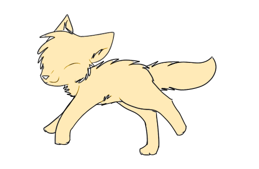
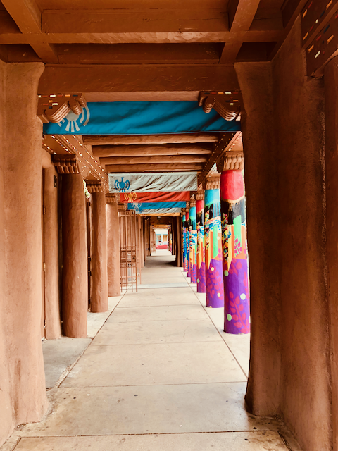
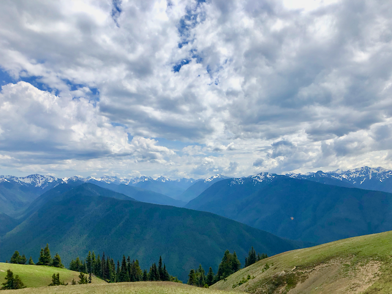
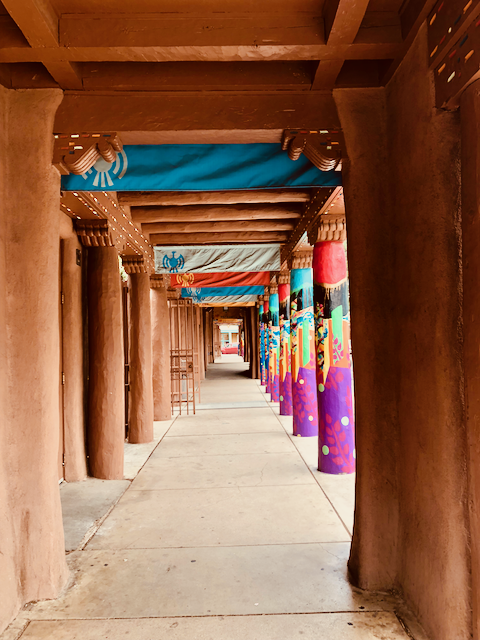
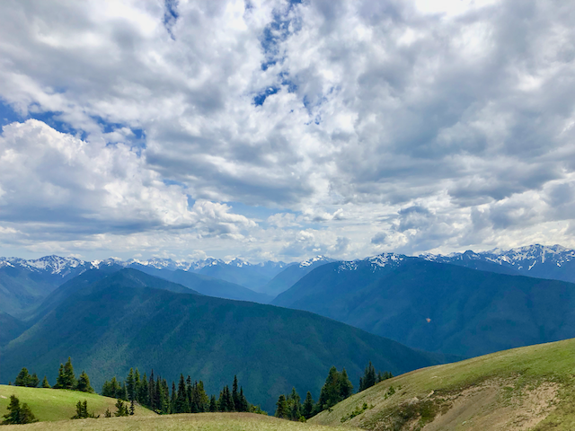
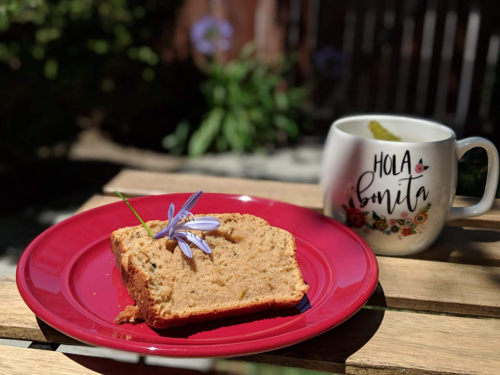

The Road Not Taken
Two roads diverged in a yellow wood, And sorry I could not travel both And be one traveler, long I stood And looked down one as far as I could To where it bent in the undergrowth; Then took the other, as just as fair, And having perhaps the better claim, Because it was grassy and wanted wear; .... - Robert Frost
I still find it awkward to tell people that before I joined the PhD in Computer Sciences program, I did my bachelors in Textile Technology. I suppose it is a road nobody takes. Well, it is taken now. My foot print is all over that road; sometimes walking, sometimes limping, sometimes sprinting.
The stigma is particularly strong in India (where I come from) where most people are like horses with blinkers on. No offense. May be some. I find it incredible that people find it incredible that one can study computer science after studying textile technology. I am living proof that you can do whatever you want, whenever you want. Except for illegal stuff; don't do that.
Textile Technology is a engineering program and not a arts class, by the way.
Life has been a meandering road for me and I loved every turn and twist in that roller coaster ride. In this journey I met some really creative, talented, geeky people; I know I am not as creative or talented or geeky as the best of them. But I tend to bite off more than I can chew and my faith in myself sees me through to the end. I finish what I start.
On Your Marks, Get Set, ... RUN!
People who know me now accuse me of being a fitness freak. But few know how I was once a sloth and how I came to love running.

I think I owe it to my PhD course. Like a typical (it is typical, right? yes?) research, findings were plateauing, papers were getting rejected and the researcher, yours truly, was going crazy. Work was not leading anywhere. So I decided to look for something that is not open ended or vague; something that does not require literature study; something that will not get rejected in spite of results because it was not novel or academic enough.
Well, whats more well defined than 13 miles and 192.5 yards. I mean, just look at those precise numbers! I don't need a survey to study all the previous runs. The average long distance runner aims to run that distance in 2 hours. If I can do it, can anybody reject my result? Can I do it?
Yes. Yes I can! Chicago, Half Marathon
The Bug, The Bake And The Bean
When I am not busy working or working out, I am busy looking at the world map and checking off places I have been to and looking at the long list of places to be at. I always deny it. I don't think I travel extensively. I am only trying to figure out if I love forests more than beaches, sunrises more than sunsets, valleys more than mountains. May be it is true what they say: I have been bitten by the travel bug.
 



And when the airlines won't have me, I have my oven. I dream of opening a bakery someday. My earl grey cake is simply amazing. If you won't believe me, read the following reviews:
"I hate(d) tea, but that tea cake was absolutely scrumptious." - Pallavi "Oh you want me to get fat. Do you not need company at the marathon?" - Ankita "Can I join your bakery too? But don't expect me to do any work!" - JD 
I think the cake goes well with a good cup of coffee. Did I mention I love coffee?